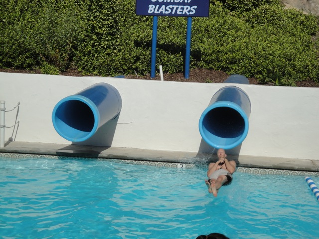
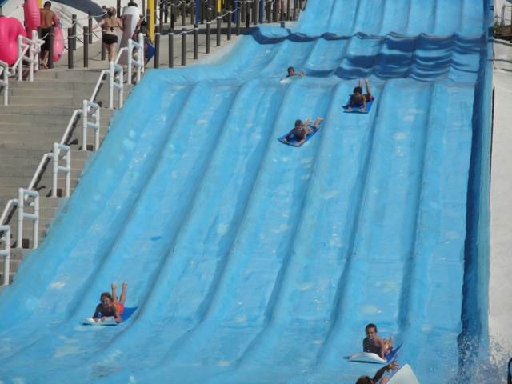
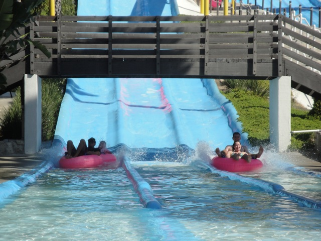
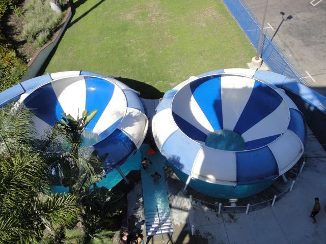

Waterpark Weekend 2010
Raging Waters Wild Rivers
Next up on the Waterpark Weekend Itenerary Weekend, Wild Rivers.
Wild Rivers is still California's best water park.
 First ride of the day. Bombay Blasters.
First ride of the day. Bombay Blasters.
 This is way better than anything at Raging Waters.
This is way better than anything at Raging Waters.
Who said a water slide couldn't have a launch?

SPLOOSH!!!!!!
 Surf Hill is still the best racer slide ever.
Surf Hill is still the best racer slide ever.

Not only is it trimfree, but you don't even have to be attached to your mat.
This slide is awesome.
It may not do too much, but it is fast!!!

Plus you can have a fun waterslide race on it.
 I'm not going to waste any of my precious Wild Rivers Time on this ride.
I'm not going to waste any of my precious Wild Rivers Time on this ride.
"I'm at a good waterpark wearing a towel cape featuring an even better waterpark."
 Since I was last here, Wild Rivers went made their own lovely creation known as the Funnel Dog? Will this be the new Chocolate Covered Bacon?
Since I was last here, Wild Rivers went made their own lovely creation known as the Funnel Dog? Will this be the new Chocolate Covered Bacon?
Nope. This is MUCH better than Chocolate Covered Bacon. (Oh, and I also learned that jelly goes great with french fries.)
You know you've invented a good product when you have the approval of the local bees.
When did Wild Rivers get this? I never knew this existed!!
This is awesome! How many waterparks have their very own hot tub? =)
 "Hey Cody, what's Wild Rivers sponsered by?" "I don't know Kevin. Do you know what time it is?"
"Hey Cody, what's Wild Rivers sponsered by?" "I don't know Kevin. Do you know what time it is?"
 Up next, Congo River Rapids.
Up next, Congo River Rapids.
 I LOVE THIS SLIDE!!!! This year, our raft on Congo simply flipped and sent Cody and I hurling down the rest of the slide as a body slide. (Keep in mind, we didn't jump out like some of the morons shown in my Wild Rivers Video. We were EJECTED out by the slide itself.)
I LOVE THIS SLIDE!!!! This year, our raft on Congo simply flipped and sent Cody and I hurling down the rest of the slide as a body slide. (Keep in mind, we didn't jump out like some of the morons shown in my Wild Rivers Video. We were EJECTED out by the slide itself.)
 Up next, Patriot.
Up next, Patriot.
Patriot is basically what would happen if Soak City Palm Springs tooke a Super Big Surf Rider Rapids and stuck a half pipe at the end.
 And while Surf Rider Rapids is one of Soak City Palm Spring's best attractions, here, Patriot is a minor ride.
And while Surf Rider Rapids is one of Soak City Palm Spring's best attractions, here, Patriot is a minor ride.

And now, the moment you'll all been dreaming of. The true helix of death.
"How the hell can you people stand this? I'm freezing my ass off over here!!! Then again, I'm super sensitive to anything cold since I'm freaking Cody."
The helix of death awaits you.
 It may completely scratch up your back, but it's totally worth it.
It may completely scratch up your back, but it's totally worth it.
 "We're gonna marathon this thing all day long."
"We're gonna marathon this thing all day long."
We kept marathoning all of Wild Rivers awesome slides until we had to leave. Wild Rivers was awesome, as usual. And if you see this burger place, eat there. It too, is awesome.
Home